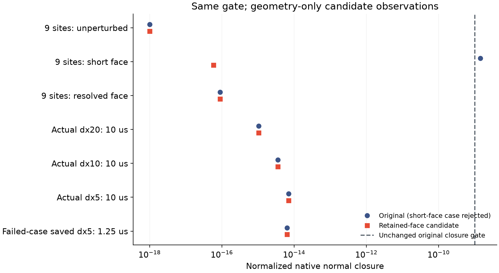

保留短边的候选，
通过几何与既有检查。
候选只在原坐标去重之后，保留所有正长度边。面积、正交、面配对和闭合检查照常执行；原默认求解器与已归档二进制均未修改。
尚未验收完整动力学。这不是实际第78步重放，也没有证明那次失败的确切根因。旧时间配对仍不可用，未启动新的长作业。
固定反例现在怎样了？
原函数在9点短边反例上被10⁻⁹闭合门槛拒绝；候选在同一输入、同一门槛下得到闭合残差 5.876×10⁻¹⁷。未扰动、较大扰动两个控制组也通过。原失败记录完整保留。

另取四份实际保存几何：20／10微米网格的10微秒、5微米首组10微秒，以及失败组最后保存的1.25微秒。两种实现的单元顶点、面积、邻接和导通系数在这些快照上逐项相同；并未重跑这些轨迹。
原有曲面与机械功检查仍成立吗？
14曲面能量等既有检查通过
4初态准备检查通过
6机械功观察检查通过
共24项是本轮新执行，使用原测试内容、容差和CHOLMOD/H1配置，通过编译选择候选几何函数。检查中包含原有小规模耦合步；没有重放冻结的长期算例。通过这些固定工况，不代表所有拓扑变化附近的导数或实际时间／空间收敛都已成立。
下一道关卡：真实算例的有界检查
先检验实际算例的短步原生账本、机械功和结果对照，再按证据决定是否重新计算同一候选实现下的时间配对。不能直接用旧实现的粗时间步和新实现的细时间步拼成合格配对。任何超过2小时的后续计算仍须每半小时监视。
物理通量／牵引力、原10／50／200微秒、交换系数、薄膜元厚度比和整体实验仍待完成，C1长期目标继续。